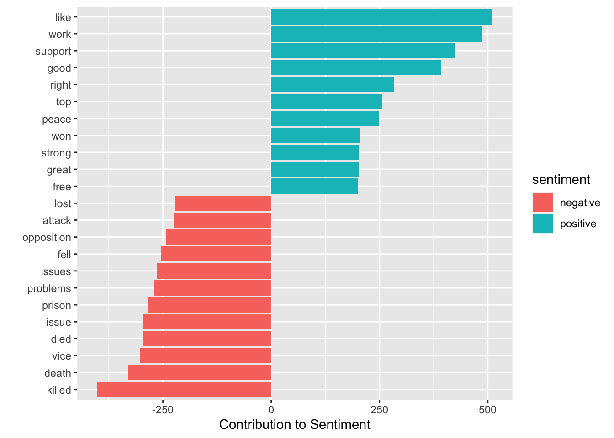

According to the “Text Mining with R” textbook, the tidy text format is a table with one-token-per-row. This means that:
Each variable is a column
Each observation is a row
Each type of observation unit is a table Therefore, a token is a meaningful unit of text, like a word, that we as data scientists are interested in analyzing. For tidy text mining, we may want to do a process called tokenization which splits words into tokens and then allows us to normally analyze by word.
In chapter 5 of “Text Mining with R”, DTM is one of the most common structure that text mining work with, where
Each row represents a document (book or article)
Each column represents one term.
Each value (typically) contains the number of appearances of that term in that document.
Since DTM objects and and tidy data frames are two incompactible objects, we cannot use tidy tools to analyze a DTM object. Tidytext package provides two functions that convert between these two formats:
tidy() turns a DTM to a tidy dataframe.
cast() turns a tidy one term per row dataframe to a matrix.
# DTM# Install the package AssociatedPress before you run this code chunkdata("AssociatedPress", package ="topicmodels")# tidying a DTMap_td <-tidy(AssociatedPress)ap_td
# A tibble: 302,031 × 3
document term count
<int> <chr> <dbl>
1 1 adding 1
2 1 adult 2
3 1 ago 1
4 1 alcohol 1
5 1 allegedly 1
6 1 allen 1
7 1 apparently 2
8 1 appeared 1
9 1 arrested 1
10 1 assault 1
# … with 302,021 more rows
# joining tidy dataframe with sentiments dataframeap_sentiments <- ap_td %>%inner_join(get_sentiments("bing"), by =c(term ="word"))# Here is an example from the "Text Mining with R"ap_sentiments %>%count(sentiment, term, wt = count) %>%ungroup() %>%filter(n >200) %>%mutate(m =ifelse(sentiment =="positive", n, -n)) %>%mutate(term =reorder(term, m)) %>%ggplot(aes(x = m, y = term, fill = sentiment)) +geom_col() +labs(x ="Contribution to Sentiment", y ="")

# casting a tidy dataframeap_td %>%cast_dtm(document, term, count)
<<DocumentTermMatrix (documents: 2246, terms: 10473)>>
Non-/sparse entries: 302031/23220327
Sparsity : 99%
Maximal term length: 18
Weighting : term frequency (tf)
# A tibble: 73,422 × 4
text book linenumber chapter
<chr> <fct> <int> <int>
1 "SENSE AND SENSIBILITY" Sense & Sensibility 1 0
2 "" Sense & Sensibility 2 0
3 "by Jane Austen" Sense & Sensibility 3 0
4 "" Sense & Sensibility 4 0
5 "(1811)" Sense & Sensibility 5 0
6 "" Sense & Sensibility 6 0
7 "" Sense & Sensibility 7 0
8 "" Sense & Sensibility 8 0
9 "" Sense & Sensibility 9 0
10 "CHAPTER 1" Sense & Sensibility 10 1
# … with 73,412 more rows
Now, to work with the tidy dataset we just created, we need to restructure it into a one-token-per-row format which leads us to our unnest_tokens function
The unnest_tokens uses the tokenizers package to separate each line of text in the original data frame into tokens. (More on different tyoes of tokenizing later)
Now that our data is in a one-word-per-row format, we can use tidy tools (like dplyr).
Removing Words
We can use the tidytext dataset stop_words with an anti_join to remove common English words like “the”, “of”, and “to” which potentially not be fruitful in a sentiment analysis context.
tidy_books <- tidy_books %>%anti_join(stop_words)
Joining, by = "word"
Practice
Find the most common words in all the tidy_books books as a whole. Create a visualization via ggplot to show the most common words in Jane Austen books.
tidy_books
# A tibble: 217,609 × 4
book linenumber chapter word
<fct> <int> <int> <chr>
1 Sense & Sensibility 1 0 sense
2 Sense & Sensibility 1 0 sensibility
3 Sense & Sensibility 3 0 jane
4 Sense & Sensibility 3 0 austen
5 Sense & Sensibility 5 0 1811
6 Sense & Sensibility 10 1 chapter
7 Sense & Sensibility 10 1 1
8 Sense & Sensibility 13 1 family
9 Sense & Sensibility 13 1 dashwood
10 Sense & Sensibility 13 1 settled
# … with 217,599 more rows
The gutenbergr package
Another package we will be using for our sentiment analysis is the gutenbergr package, which can give us access to public domain works in the Project Gutenberg https://www.gutenberg.org/ Collection. This is a huge package that gives us access to a large number of books and metadata around the books.
Let’s look at some of the Bronte sisters’ works.
Practice
To do: Pepare the gutenberg dataset for the Bronte sisters for sentiment analysis (hint: think unnest_tokens and anti_join). From there, how would we find the the most common words in the novels?
bronte <-gutenberg_download(c(1260, 768, 969, 9182, 767))## What would we insert in the in the parentheses?bronte %>%unnest_tokens(???, ???) %>%anti_join(????)## Now, use previous examples to find the most common words
So what is sentiment analysis? Sentiment Analysis allows us to analyze the emotion in text programmatically. one of the more common ways to do this is to consider the text as a combination of its individual words and the sentiment content of the whole text as the sum of the sentiment content of the individual words.
How are sentiment lexicons created and validated? They are constructed either via crowdsourcing or by an individual which they was validated using crowdsourcing, restaurant or movie reviews, or Twitter data.
There are a few different lexicon databases that can be used to do sentiment analysis (read more here <>) but for this we will use the nrc lexicon.
get_sentiments("nrc")
# A tibble: 13,872 × 2
word sentiment
<chr> <chr>
1 abacus trust
2 abandon fear
3 abandon negative
4 abandon sadness
5 abandoned anger
6 abandoned fear
7 abandoned negative
8 abandoned sadness
9 abandonment anger
10 abandonment fear
# … with 13,862 more rows
NOTE: THIS WILL TAKE A WHILE TO DOWNLOAD
The nrc lexicon works by giving a list of English words and then giving their association to eight basic emotions (anger, fear, anticipation, trust, surprise, sadness, joy, and disgust) and two sentiments (negative and positive). The annotations for the lexicon is collected manually through crowd sourcing.
As shown below, once we add new variables and organize the book so each word has a distinct row, we want to use an inner_join to find the words in common in the book Emma with the “joy” words (or nrc_join dataset) in the nrc lexicon.
Let’s try an example: What are the most common joy words in the book Emma?
# A tibble: 301 × 2
word n
<chr> <int>
1 good 359
2 friend 166
3 hope 143
4 happy 125
5 love 117
6 deal 92
7 found 92
8 present 89
9 kind 82
10 happiness 76
# … with 291 more rows
Practice: How many positive and negative words are in each of the sections of the book? Here is some starter code to help you out!
jane_austen_posneg <- tidy_books %>%inner_join(get_sentiments("nrc")) %>%count(book, ______, %/%80,# We are using 80 just because of the text sentiment) %>%# pivot_wider into sentiment and get values from the count (n)%>%mutate(sentiment = positive - negative)
Now try and plot the results! Creat the graph however you think best fits the previous results.
Practice: What are the most common positive and negative words? Use the nrc database and tidy_books. We will want to use an inner_join and a count().
Now, make a graph with this information
One cool thing with sentiment analysis is we customize our lists, like for example the word “miss” is coded as negative but can also be used as a title for a young, unmarried women in Jane Austin’s works. We can use bind_rows() to solve this:
Question: When we look at a body of literature works, say J.K.Rowling’s Harry Potter series, and want to know what words/terms are more prominent in one book than in others (therefore can potentially tell us about a character or event specifically tied to that book), how do we do it?
tf : term frequency, the number of appearances a word makes over total words in a document (%).
problem: the most frequently used words in English tend to be stopwords like “the”, “of” or “like”, which generally are not that important except in some cases. Therefore, we need a better metric to reflect the true value of a word or phrase.
idf: inverse document frequency, which is the natural log of the total number of documents divided by the number of documents containing the term we want to examine. The idf is a measure that penalizes commonly used words by decreasing their weights but rewarding less commonly used words by increasing their weights. Its formula is as follows